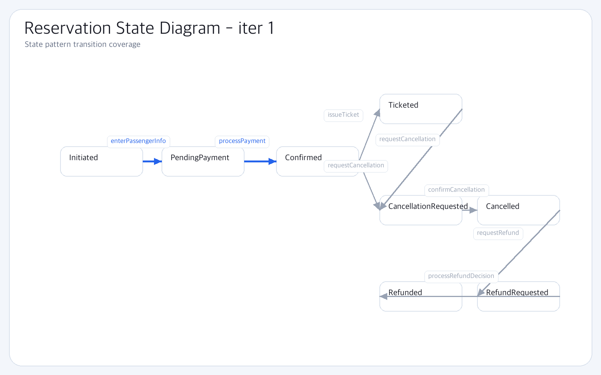
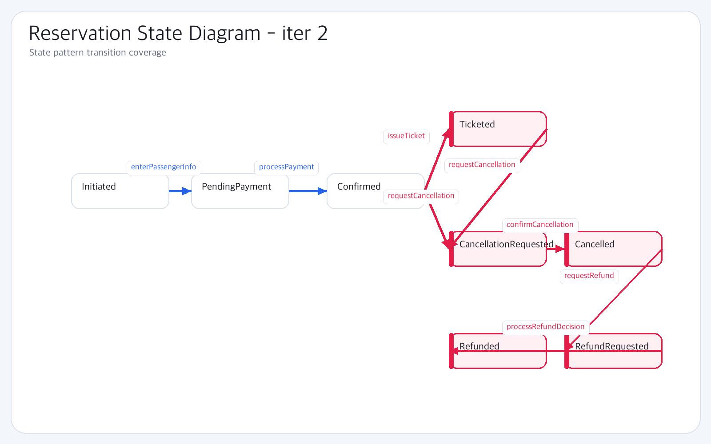

State Diagram (Reservation)
iter 1 vs iter 2 — sub iteration State 활성
iter 1
3 / 8 활성
iter 2
8 / 8 활성
·
+5
iter 1
3 transitions live · 5 stub

reservationState-iter1.png
AmaterasUML PNG export here
iter 2
+5 transitions activated · 8 / 8 live

reservationState-iter2.png
AmaterasUML PNG export here